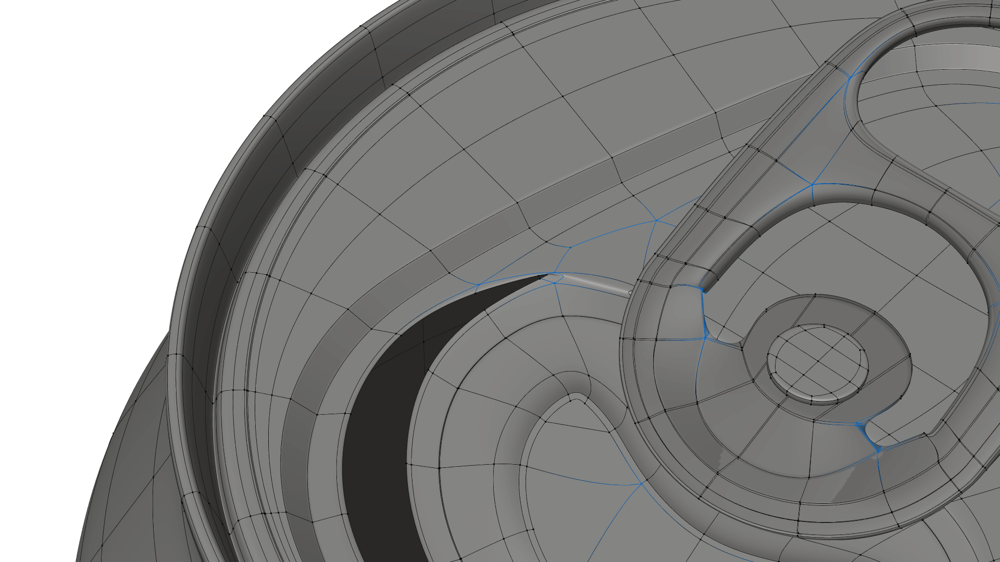
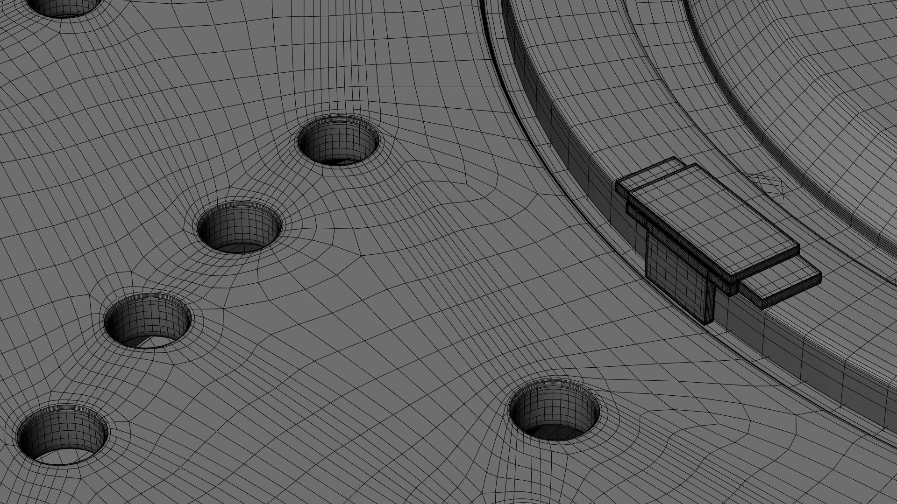
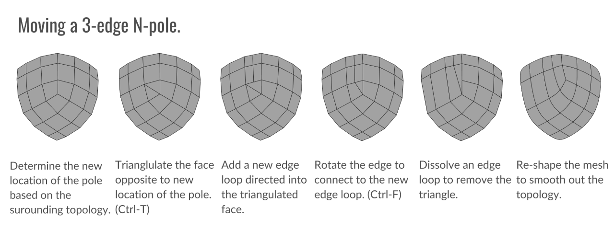
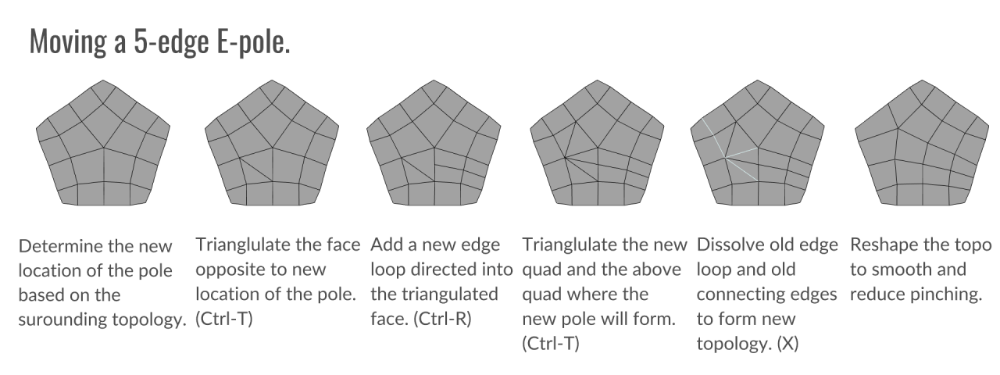

Moving and Manipulating Edge Poles
Let’s talk about Edge poles, those famously aggravating little points on a mesh that cause so many headaches for 3d artists around the world. Why are they so terrible? What can we do about them? And when are they actually good to use?

Edge poles are generally considered to vertices with more or less than 4 connecting vertices. On a polygon mesh, this means vertices with either 3 connecting edges or 5 or more connecting edges. Poles most commonly form when triangles or n-gons appearing in models, hence why such polygon types are generally avoided in 3d modeling. Triangulated meshes (such as game models, or photogrammetry models) are most notably known for consisting almost entirely of edge poles with very few 4-edge vertices, the same applies to meshes with large numbers of n-gons.
The Problem of Poles
So you might be wondering, why do edge poles get such a bad wrap? The primary reason is that an edge pole creates pinching around its perimeter when subdivisions or smoothing is applied. This is why a cylinder with a triangle cap looks so odd when applying subdivision surface smoothing. The example below shows why this can be a problem on curved surfaces. The cross-section view shows that the corner that contains a pole will yield an uneven surface when subdivisions are applied.

Despite the pinching created by poles, they are an important part of modeling and a necessary component for many modeling techniques and shapes. So this the rest of this post will attempt to explain a bit more about poles and how to use them effectively.
E-poles
E-poles are the most common pole type and consist of five edges intersecting at a single vertex. E-poles are most notorious for appearing when extruding faces on a mesh and for forming unwanted flat “corners” within the topology when edge loops meet or turn. E-poles are also what form concave corners in hard surface models.

N-poles
N-poles are vertices that consist of three intersecting edges. This type of pole is far less common, but often appearing around poles or inset parts of a mesh. In organic modeling, this pole is often known as the “nose” pole, since N-poles are often necessary for modeling the base of the nose. N-poles are also what form the corner of a cube or most other convex corners.
Other Pole Types
Poles with six or more edges are generally considered to be bad practice and almost never show up in good topology. Again, on flat surfaces, 6+ edge poles can be acceptable if absolutely needed, but this is a rare case.
When are Poles Ok?
You’ve probably come to realize that poles are inevitable, and required for proper topology. But when exactly do we know when a pole should or shouldn’t be where it is? It all comes down to curvature. If a pole is changing the curvature of the surface, then it should be removed or eliminated. This usually happens on corners or any other areas of extreme curvature. Of flat surfaces, less visible areas, or areas with a slight curvature like a cheek of a face are areas where poles are least destructive and are where you should try to place or move poles to.

Moving Poles: The Great Compromise
One of the most requested topics I’ve received is how to move poles. And for good reason, poles can be very difficult to move without modifying topology in an adverse way. In almost every circumstance model density must be changed to accommodate a change in pole locations, causing the topology to quickly become very sloppy if multiple edges need to be moved. This is why the best advice for moving poles is to not move them wherever possible by planning your pole locations is advance. It’s pretty easy to judge where a pole will form by looking at the major flows of a surface and where they intersect. That intersection is where a pole will appear. Luckily, it’s up to you where that intersection happens.
But, in the case that you do end up with a pole that needs to be moved, there are a number of options for moving poles depending on your needs. Every situation requires a slightly different approach, however, there are some general techniques for 3 and 5-edge poles that can be a good basis for moving a pole. Something to remember, whenever a pole is moved, one edge loop must be removed in the direction the pole is being moved, while another is subtracted from wherever the pole came from. The reason for this is that the edge loops must be redirected around the new location of the pole. Otherwise, an n-gon will appear.
 
That’s all! I hope this short primer on edge poles has given you a better understanding of how to use them effectively. If this guide was useful to you, then please consider sharing it or contributing to the project’s Patreon page.